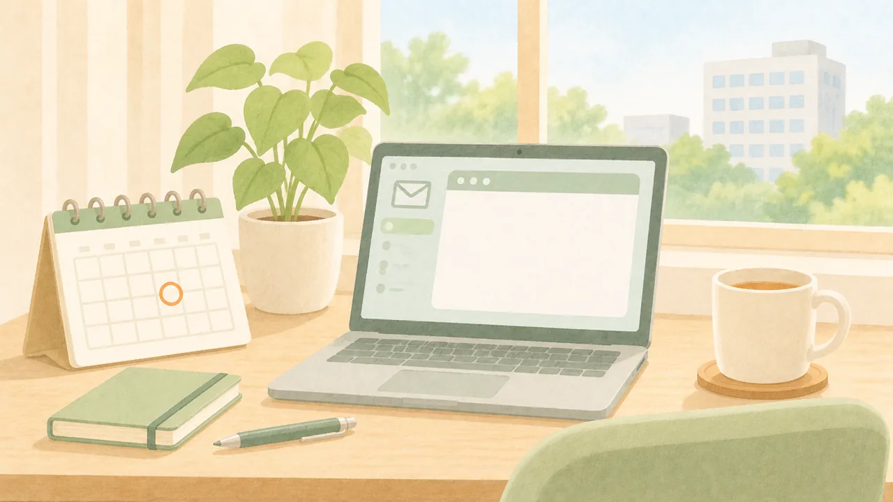
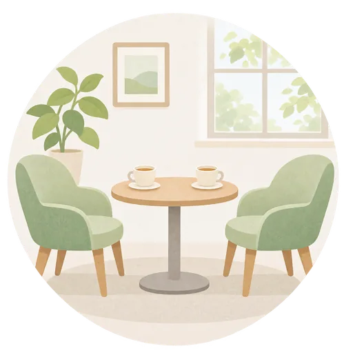

このブラウザでは、チェックを保存できません。バックアップの方法をご覧ください。
LINEの中で開いています。チェックを残すには、Safari・Chromeで開き直すのがおすすめです。
← 特典の一覧へ
そのまま使える文例とメモ
(休職中・戻る前)
■7 人事に聞くこと(質問文)
最初にこう伝えてから
休職について確認したいことがあります。質問をメールでお送りしてもよいですか
次の質問を送ってください。
答えをもらえた質問に、チェックを付けられます。
答えはメールでもらうと、あとで見返せます。
■8 休職中の連絡を、窓口1人・月1回にするお願い
療養に専念したいので、ご連絡は人事の〇〇さんから、月1回、メールでいただけると助かります

■9 復職の面談で、お願いしたい働き方を伝える一文眠れる日が続き、通勤の練習も〇週間できています。最初の1か月は、〇〇で働かせてください
- 〇〇の例:残業なし/業務の量を減らす/在宅勤務の日を作る
- 面談の前日に書いて、当日はそのまま読み上げてください。面談で言わなかったことは、条件に入りません。
チェックは自動で保存されます。
バックアップ
※診断や、休職・復職の判断を示すものではありません。病気かどうか、休むべきか、戻れるかどうかは、医師と会社が判断します。
※制度や手続きは会社によって違います。自分の会社の決まりは、就業規則と人事で確認してください。